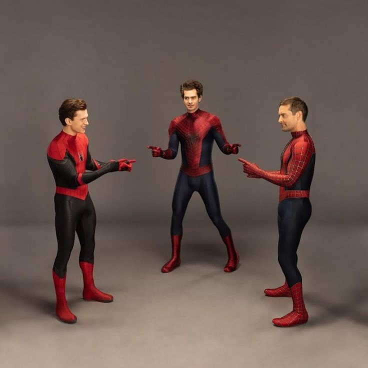
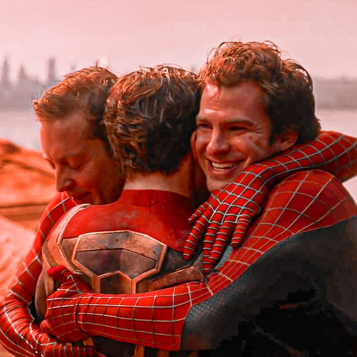

Spider-Man
"With great power comes great responsibility." – Ben Parker
-
Spider-Man 1 (2002)
- Peter Parker, a shy high school student, is bitten by a radioactive spider, granting him superhuman abilities. He learns to use his newfound powers and embrace the responsibility that comes with them after the tragic death of his Uncle Ben. As Spider-Man, he faces Norman Osborn, also known as the Green Goblin, while juggling his feelings for Mary Jane Watson and the challenges of his double life.
-
Spider-Man 2 (2004)
- Peter Parker struggles to balance his personal life, studies, and his role as Spider-Man. When he confronts Dr. Otto Octavius, a brilliant scientist turned the terrifying Doctor Octopus after a failed experiment, Peter must rediscover his motivation to be a hero. Between his complicated relationship with Mary Jane and his strained friendship with Harry Osborn, he must save the city from imminent destruction.
-
Spider-Man 3 (2007)
- Peter Parker faces a series of challenges: his alter ego, Spider-Man, turns darker under the influence of an alien symbiote, affecting his personality. Simultaneously, he battles new foes: Sandman, who is linked to his Uncle Ben's death, and Venom, a rival empowered by the same symbiote. Peter must learn to forgive and regain balance to protect those he loves.
The Amazing Spider-Man
"Your parents had a philosophy: if you could do extraordinary things for others, you had a moral obligation to do so." – Ben Parker
-
The Amazing Spider-Man (2012)
- This version explores Peter Parker's origins. After uncovering a mystery about his parents, Peter becomes Spider-Man and faces the Lizard, a creature created by Dr. Curt Connors through genetic experimentation. Between his quest for identity, a budding romance with Gwen Stacy, and the responsibilities of being a hero, Peter begins to understand the scope of his powers.
-
The Amazing Spider-Man: Rise of Electro (2014)
- Peter Parker juggles his life as a hero and his relationship with Gwen Stacy. New enemies emerge, including Electro, a former admirer turned powerful and unstable, and Harry Osborn, who becomes the Green Goblin. While protecting New York, Peter experiences a heartbreaking tragedy that changes his life forever.
Spider-Man - Marvel Universe
"People need a symbol. Something to believe in. And they need you." – Happy Hogan
-
Spider-Man: Homecoming (2017)
- After the events of Captain America: Civil War, Peter Parker adjusts to his role as a young hero under Tony Stark's mentorship. He faces Adrian Toomes, aka the Vulture, a weapons dealer using alien technology. Peter learns to embrace his responsibilities as Spider-Man while navigating life as a high schooler.
-
Spider-Man: Far From Home (2019)
- On a school trip to Europe, Peter Parker hopes to take a break from his Spider-Man duties. However, he is recruited by Nick Fury to fight the Elementals alongside Mysterio, a supposed hero from another universe. Peter soon uncovers Mysterio's true intentions and must protect his friends while coming to terms with Tony Stark's legacy.
-
Spider-Man: No Way Home (2021)
- Peter Parker’s double identity is revealed to the world, turning his life upside down. Seeking to reverse the situation, he asks Doctor Strange for help, but a botched spell brings villains from other universes into his world. Peter teams up with two alternate versions of Spider-Man to fix the chaos, face iconic foes, and learn vital lessons about sacrifice.
Spider-Man - Sony
"Anyone can wear the mask. You could wear the mask. If you didn’t know that before, I hope you do now." – Miles Morales
-
Spider-Man: New Generation (2018)
- Miles Morales, a teenager from Brooklyn, gains powers similar to Spider-Man after being bitten by a radioactive spider. When the multiverse is fractured, he encounters other Spider-People from different dimensions. Together, they must repair the multiverse and defeat Kingpin while Miles learns what it truly means to be a hero.
-
Spider-Man: Across the Spider-Verse (2023)
- In this sequel, Miles Morales delves deeper into the multiverse and joins the Spider-Society, a team of Spider-People from various dimensions. As he works to protect his own world, Miles faces complex moral dilemmas and uncovers secrets about his role in the greater multiverse.

